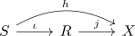
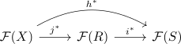
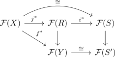

jumping descent lemma for sieves
Proposition
Let $\mathcal{C}$ be a small category, $X$ an ojbect and $\mathcal{F}: \mathcal{C}^{\mathrm{op}} \rightarrow \mathrm{Set}$ a presheaf on $\mathcal{C}$. Suppose $S_i \subseteq R$ are sieves on $X$ such that $S$ is F-descendable sieve and that for all objects $Y$ and all $f \in R(Y) \subseteq \mathrm{Hom}_{\mathcal{C}}(Y,X)$ there exists an F-descendable subsieve $S' \subseteq f^*(S)$.
Then $R$ is F-descendable.
Proof
Let

be the inclusions.
and consider the maps

were we want to show that the map $j^*$ is bijective .
Note that by assumption the composition is bijective, so in particular $j^*$ must be injective.
Hence it remains to show surjectivity of the first map. So let $x\in \mathcal{F}(R)$ be any element.
By the sheaf co-yoneda we have
That is, $x \in \mathcal{F}(R)$ is precisely a compatible collection of elements $x_f \in \mathcal{F}(Y)$ indexed over the maps $f: Y \rightarrow R$ (which are precisely maps $Y \rightarrow X$ contained in $R(Y)$). So let $x = (x_f)_{f}$ and consider $y \coloneqq \iota^*(x) = \iota^*( \{x_f\})$. This element $y$ then comes from an element $x' \in \mathcal{F}(X)$, i.e. $h^*(x') = \iota^*( \{x_f\}_{f} )$.
We now wish to shaw that $j^*(x') = x \in \mathcal{F}(R)$.
To do so, it suffices to show that for eahc fixed $f: Y \rightarrow R$ we have
To show this we then consider the the diagram

where by construction the
By assumption $\mathcal{F}$ satisfies descent with respect to $S'$, so the lower horizontal map is also an isomrophism.
It sherefore suffices to show that $x_f = f^*(x);q after mapping to \mathrm{Hom}(S',F) = F(S')$ where it becomes true because the square commutes and $x$ and $\{x_f\}$ have the same image in $\mathrm{Hom}(S,F) = F(S)$ by construction.
TODO